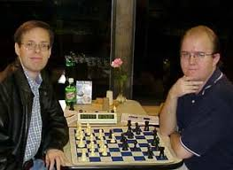

Justin Daniel's Chess Portfolio
Schedule tutoring with Justin!

Credentials and Experience
- Justin is a rated national chessmaster certified by the United States Chess Federation, having reached a peak rating of 2258.
- He has immense experience with competitive chess play. He has played in over 150 over-the-board tournaments. His tournament wins include 5 state scholastic chess titles in North Carolina, South Carolina, and Arizona (3 first place ties, 2 clear first place finishes), and a first place finish in the Chicago Open under 2300 section.
- Justin remains active playing chess on the Internet. His favorite site to play is chess.com, where he maintains a blitz rating of 2203 at the time of writing, placing him in the top 99.7 percentile of players.
- Justin also has experience coaching and teaching chess. As assistant coach he helped lead Cass Technical High School's team to a second place finish at the Michigan Scholastic State Chess Championship.
- Justin offers lessons in chess for all facets of the game to players of all strengths, from beginner to expert.